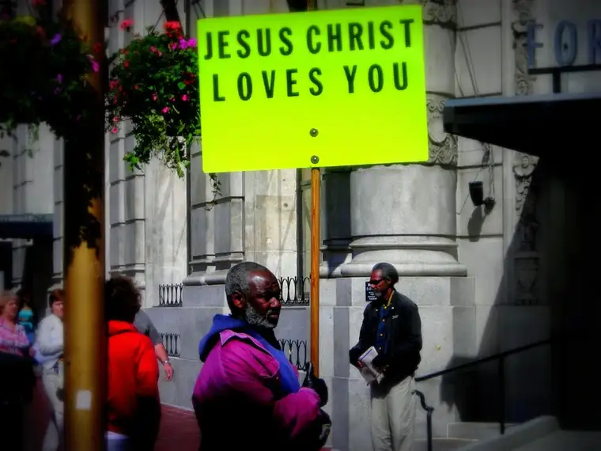

 |
|
| Morguefile.com |
{kind=link}
I’d just read an article about how hard it is to shake the Catholic from our blood, no matter how hard we try.
The gist was that our Catholic faith runs deep in our veins, and those that leave the faith often find aspects of the Catholic sensibility and even tangible history that remain a residual part of them.
As a grateful Catholic, and someone who has approached the faith at one time from a wandering, wondering distance before finding her way back fully in the fold, it is hard for me not to respond with an, “Amen! I get this!”
Naturally, I wanted to share this interesting piece with my Catholic friends in particular. Since many of them are on Facebook, I started there. Upon posting a link to the article, “No-Exit Catholicism,” from Ethika Politika, I added these thoughts to my status update:
“Interesting piece on how being Catholic can take hold of individuals and cultures. Even those who wish to walk away cannot totally un-thread from Catholicism’s beautiful grasp.”
But a Christian friend misunderstood my intentions – at least it seemed to me – and offered a gentle challenge:
“I see the tie as Christ himself. Don’t lose focus on the reason for the religion in the first place.”
Not being entirely clear on her words, I initially did some self-analysis. Does she think I am somehow discounting that Jesus the Christ is intricately involved in this entity called the Catholic Church? It hurt to think this could be the case, knowing the reality of how I feel about Jesus.
Of course the reason for the religion is Jesus. Of course!
Needing to sort through the words that brought me straight to the core of my beliefs, causing me to face them head on and size up the misunderstanding, I asked for clarification.
She responded that she feels my posts, like this one, sometimes come off as being “focused on Catholic over Christ.” She felt compelled to comment “because I don’t want you to get off track.”
So far the clarifications weren’t making me feel much better. There was a disconnect going on; that was clear to me. Thankfully, the underlying peace I feel at my core because of my faith and belief in Jesus gave me an assuring whisper: “Still here.” But it bothered me that she’d somehow missed my intentions.
What seemed to be happening was a misunderstanding between the Catholic mindset and that of a fellow sister in Christ who is not Catholic. In fact, in a way her comment fortified what the article was saying; that being that there is a particularly Catholic way of looking at the world, and you either see it or you don’t. Once you do, it’s hard to unhitch from that. If you never did, it would be hard to explain.
From the non-Catholic’s eyes, my zeal for Catholicism was somewhat off-putting. In highlighting the Catholic Church, I was being perceived as somehow dissing God – making the Church more important than Jesus himself.
But the truth of it is that for the Catholic who truly knows his or her faith, Jesus and the Church are one and the same. When I am leaping up and down about the Church or something awesome the pope said or some other beautiful truth that has been revealed to me through the Church, I am actually and truly leaping up and down for Jesus.
Other Catholics would get this, but Protestants might not. And in the end, there’s really nothing I can say to satisfy my friend or make her believe this Jesus = Church reality. There are too many forces, religious and non-religious, purporting otherwise. We forget that because the Church is full of human beings who sin that we cannot still have a truly holy community that has Jesus infused into every aspect of it.
Because the Catholic Church looks so human so much of the time, especially in terms of the ways the world looks at us from the outside in, many, Christians and otherwise, cannot, will not, grasp the continuity of the two.
It’s one of those misunderstandings I will be forced to live with, I’m afraid. Of course, I can start editing all my posts to make it explicit that whenever I mention “The Church” I really mean “Jesus,” but to me, it’s redundant.
I’m left with the realization that my Catholic readers will get it, and my non-Catholic readers won’t. And the matter may not be settled in this life.
All that said, in the end I felt gratitude for the comments. They came from a good heart and I knew that from the start. For that reason they were never a threat, but an opportunity to try to explain and share the reason for my fervor regarding the Church, which I did.
And putting it most simply, that fervor comes from a heart that “once was lost, but now is found.” There’s no taking away my zeal at this point, but the exchange helped me see that I can temper that with welcoming challenges as opportunities to explain my true intentions whenever they are misunderstood by those who don’t share my Blood Type of Catholic.
{kind=link}
Thank God, I do know the reason for the religion, and every day I feel blessed to not only live for Him but to live out my love for Him through the beautiful, revolutionary, mind-blowing entity called the Catholic faith.
Q4U: Have you ever felt misunderstood when it comes to “the reason for your religion?”